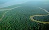

forested

Definition: A forest is an ecosystem characterized by a dense community of trees. Hundreds of definitions of forest are used throughout the world, incorporating factors such as tree density, tree height, land use, legal standing, and ecological function. The United Nations' Food and Agriculture Organization (FAO) defines a forest as, "Land spanning more than 0.5 hectares with trees higher than 5 meters and a canopy cover of more than 10 percent, or trees able to reach these thresholds in situ. It does not include land that is predominantly under agricultural or urban use." Using this definition, Global Forest Resources Assessment 2020 (FRA 2020) found that forests covered 4.06 billion hectares (10.0 billion acres; 40.6 million square kilometres; 15.7 million square miles), or approximately 31 percent of the world's land area in 2020.
Source: Wikipedia
Wikipedia Page (Something wrong with this association? Let us know.)
Wikidata Page (Something wrong with this association? Let us know.)
Occurs in: